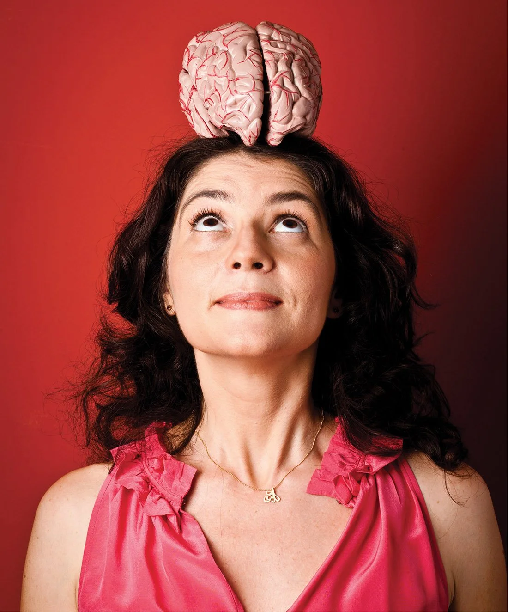
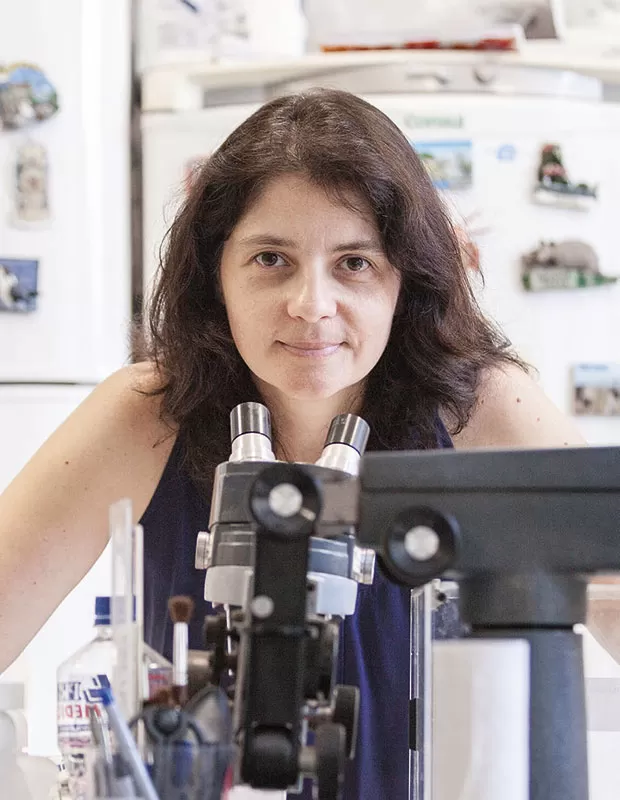

A trajetória de Suzana Herculano-Houzel é marcada por uma precocidade intelectual e uma busca incessante por respostas sobre a natureza humana. Nascida no Rio de Janeiro em 1972, Suzana cresceu em um ambiente que estimulava sua curiosidade natural. Já na infância, demonstrou sinais de seu apetite pelo conhecimento: aos quatro anos de idade, pediu à sua madrinha, que era professora primária, que a ensinasse a ler. Graças a esse incentivo, ela ingressou na primeira série já alfabetizada aos cinco anos. Seus pais, embora cientes das dificuldades do mercado de trabalho para cientistas, sempre a encorajaram a seguir sua vocação, acreditando que haveria espaço para profissionais de excelência e já antecipando a necessidade de uma formação internacional. Sua educação formal foi trilhada de forma veloz. Aos 16 anos, Suzana ingressou no curso de Biologia (modalidade genética) na Universidade Federal do Rio de Janeiro (UFRJ), formando-se aos 19 anos, em 1992. Na mesma noite de sua formatura, ela partiu para o exterior para iniciar sua pós-graduação. Inicialmente focada em genética em Cleveland, nos Estados Unidos, onde obteve seu mestrado pela Case Western Reserve University em 1995, ela acabou se apaixonando pela neurociência. Prosseguiu seus estudos na França, concluindo o doutorado na Universidade Pierre e Marie Curie (atualmente Sorbonne) em 1998, e realizou seu pós-doutorado na Alemanha, no Instituto Max Planck de Pesquisa do Cérebro, entre 1998 e 1999.
Sua rota profissional no Brasil consolidou-se na UFRJ, onde foi professora associada e chefe do Laboratório de Neuroanatomia Comparada de 2002 a 2016. Nesse período, além de suas descobertas científicas, tornou-se o rosto da neurociência no país, escrevendo colunas para a Folha de S.Paulo e apresentando o quadro "NeuroLÓGICA" no programa Fantástico, da TV Globo. No entanto, em maio de 2016, Suzana tomou a difícil decisão de deixar o Brasil para se tornar professora associada na Universidade Vanderbilt, em Nashville (EUA). O motivo central foi o que ela chamou de "engessamento" do sistema científico brasileiro: uma combinação de burocracia excessiva, falta de meritocracia e cortes drásticos de verba que impossibilitavam a realização de ciência de ponta em solo nacional. Entre outros fatos importantes, Suzana foi a primeira brasileira a palestrar no TEDGlobal, em 2013, onde sua explicação sobre o que torna o cérebro humano especial alcançou milhões de pessoas ao redor do globo. Mais recentemente, ela revelou ter descoberto seu diagnóstico de autismo aos 47 anos. Para a cientista, essa constatação foi libertadora, servindo como base para sua filosofia do "Desde Que Funcione", que celebra a diversidade cognitiva e as diferentes formas como o cérebro pode operar com sucesso. Em 2023, ela reforçou seus laços com a ciência brasileira ao assumir a titularidade da Cátedra Otavio Frias Filho na USP.
• Método do Fracionador Isotrópico ("Sopa de Cérebro"): Desenvolvido por Suzana Herculano-Houzel em
colaboração com Roberto Lent, esse método permite contar núcleos celulares em uma suspensão
homogênea de tecido cerebral. Relevância: Antes dessa técnica, as estimativas do número de células
cerebrais eram feitas por amostragem e estavam sujeitas a grandes erros. O fracionador isotrópico
tornou possível determinar, com muito mais precisão, a composição celular de cérebros de diferentes
espécies.
• A descoberta dos 86 bilhões de neurônios: Aplicando o fracionador isotrópico, Suzana
demonstrou que o cérebro humano possui, em média, cerca de 86 bilhões de neurônios, e não 100
bilhões, como era amplamente difundido. Relevância: A descoberta corrigiu um dos mitos mais
persistentes da neurociência e mostrou que o cérebro humano segue padrões biológicos consistentes,
em vez de representar uma exceção inexplicável na evolução.
• Revisão da proporção entre neurônios e células da glia: Suas pesquisas também refutaram a
ideia de que existiriam dez células gliais para cada neurônio, revelando que, no cérebro humano,
essa proporção é aproximadamente de 1:1. Relevância: Esse achado transformou a compreensão sobre a
organização celular do sistema nervoso e destacou a real participação das células da glia no
funcionamento cerebral.
• Regras de escalonamento e a evolução do cérebro humano: Suzana demonstrou que o cérebro humano
é, essencialmente, um cérebro de primata ampliado, com a quantidade de neurônios esperada para um
primata
de seu tamanho. Relevância: O estudo mostrou que nossa capacidade cognitiva resulta da
combinação entre a alta densidade neuronal típica dos primatas e o fato de possuirmos o maior
cérebro desse grupo.
• A teoria do cozimento: A pesquisadora propôs que o domínio do cozimento dos alimentos foi um
fator decisivo para a evolução do cérebro humano, pois aumentou a disponibilidade de energia
necessária para sustentar um órgão metabolicamente muito exigente. Relevância: A hipótese oferece
uma explicação evolutiva para o crescimento do cérebro humano e para o aumento de sua capacidade
cognitiva.
• Equação do dobramento cortical: Em pesquisa publicada na revista Science, Suzana e
colaboradores demonstraram que as dobras do córtex cerebral obedecem a uma lei física relacionada à
área e à espessura do córtex, e não ao número de neurônios. Relevância: O estudo esclareceu os
princípios físicos que determinam a forma do cérebro e contribuiu para uma compreensão mais profunda
de sua organização estrutural.
• Divulgação científica e defesa da ciência: Além de suas pesquisas, Suzana Herculano-Houzel
tornou-se uma das principais divulgadoras científicas do Brasil, autora de diversos livros e
presença frequente em veículos de comunicação. Relevância: Seu trabalho aproximou a neurociência do
público, fortaleceu a valorização da ciência e inspirou novas gerações de pesquisadores,
especialmente mulheres, a ingressarem na carreira científica.
